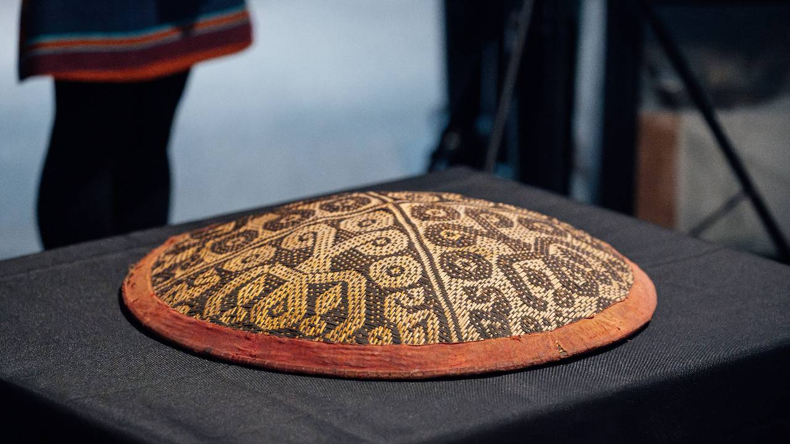

Decolonized Legacy
Click on any artifact or snapshot to enter full-screen visual exhibition room.
8 Total Exhibits

Rattan Woven Base
Detailed look at raw natural rattan fibers defining the structural boundary.

Returned Sa'ung Seling
The returned sacred crown with authentic dyes and protective geometric spirals.

Usun Apau Plateau
The majestic ancestral highland environment from where the artifacts were looted in 1895.

Exhibition Presentation
Sharing historical documents proving the sunhat's removal in 1895.

Symbolic Exchange
Laura van Broekhoven returns custody back to the Kenyah Badeng community.

Signing Homecoming
State dignitaries and community representatives witnessing the return agreement.

Shared Commitment
Valerie Mashman and Hilary Samah Tet collaborating on indigenous protection narratives.
Terracotta Rims
Detailed look at the terracotta-dyed rattan bounds framing the protective borders.